Poland missile incident: Article 4 odds spiked to 32% then eased to 12.5%; a NATO-Russia clash is priced at 10.5%. Polymarket implied odds, hourly, last 60 days. Escalation short of war is priced well above a full NATO war. Bets, not forecasts. Source: https://polymarket.com/event/nato-x-russia-military-clash-in-2025
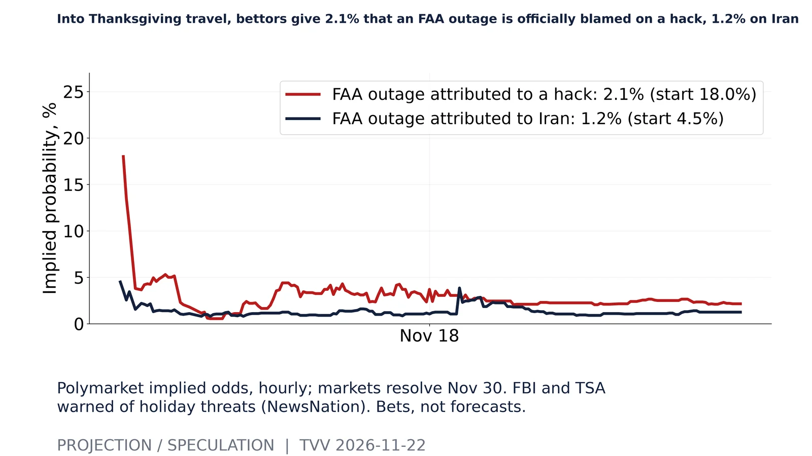
Into Thanksgiving travel, bettors give 2.1% that an FAA outage is officially blamed on a hack, 1.2% on Iran. Polymarket implied odds, hourly; markets resolve Nov 30. FBI and TSA warned of holiday threats (NewsNation). Bets, not forecasts. Source: https://polymarket.com/event/faa-outage-attributed-to-hack
Weekly pole map: magnetic north keeps sliding toward Siberia, about 37 km a year. NOAA NCEI model positions 1900–2025 (estimates, not surveys); dashed = WMM2025 projection to 2030. Source: https://www.ncei.noaa.gov/products/wandering-geomagnetic-poles
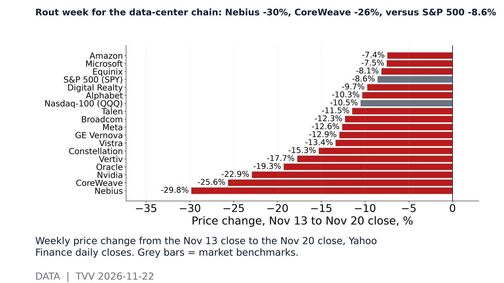
Rout week for the data-center chain: Nebius -30%, CoreWeave -26%, versus S&P 500 -8.6%. Weekly price change from the Nov 13 close to the Nov 20 close, Yahoo Finance daily closes. Grey bars = market benchmarks. Source: https://finance.yahoo.com/quote/CRWV/
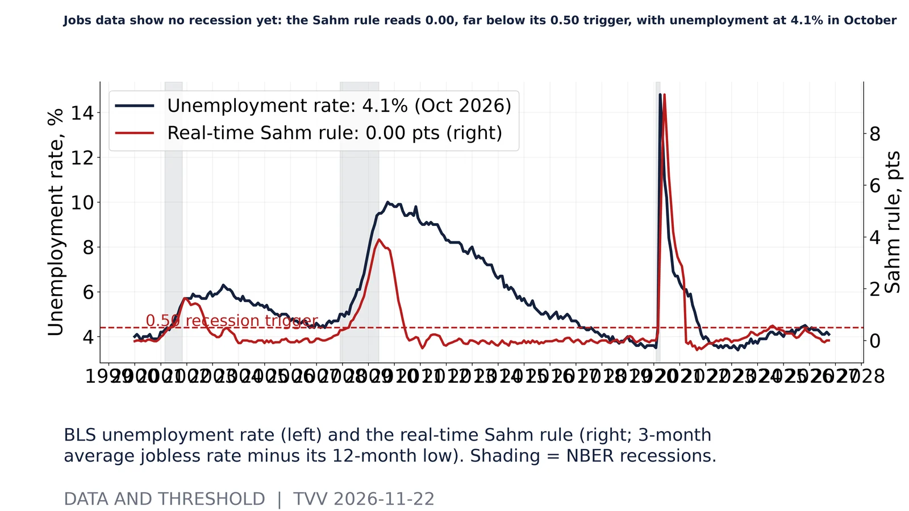
Jobs data show no recession yet: the Sahm rule reads 0.00, far below its 0.50 trigger, with unemployment at 4.1% in October. BLS unemployment rate (left) and the real-time Sahm rule (right; 3-month average jobless rate minus its 12-month low). Shading = NBER recessions. Source: https://fred.stlouisfed.org/series/SAHMREALTIME
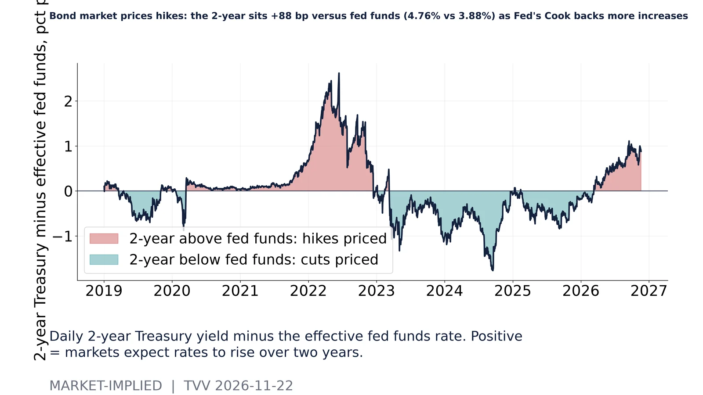
Bond market prices hikes: the 2-year sits +88 bp versus fed funds (4.76% vs 3.88%) as Fed's Cook backs more increases. Daily 2-year Treasury yield minus the effective fed funds rate. Positive = markets expect rates to rise over two years. Source: https://fred.stlouisfed.org/series/DGS2
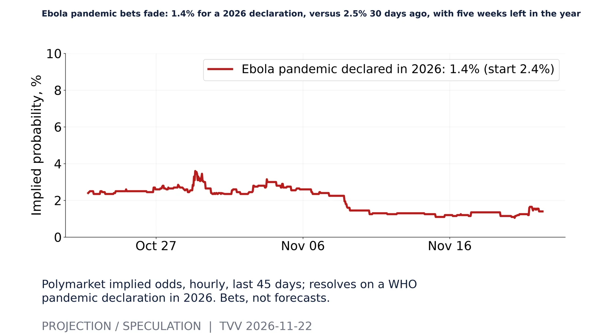
Ebola pandemic bets fade: 1.4% for a 2026 declaration, versus 2.5% 30 days ago, with five weeks left in the year. Polymarket implied odds, hourly, last 45 days; resolves on a WHO pandemic declaration in 2026. Bets, not forecasts. Source: https://polymarket.com/event/ebola-pandemic-in-2026
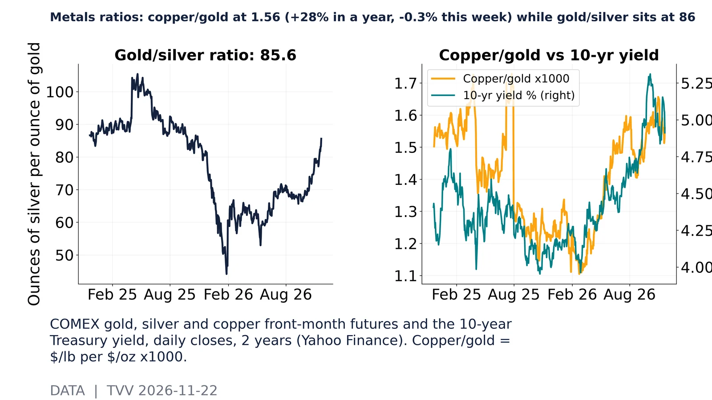
Metals ratios: copper/gold at 1.56 (+28% in a year, -0.3% this week) while gold/silver sits at 86. COMEX gold, silver and copper front-month futures and the 10-year Treasury yield, daily closes, 2 years (Yahoo Finance). Copper/gold = $/lb per $/oz x1000. Source: https://finance.yahoo.com/quote/GC=F/
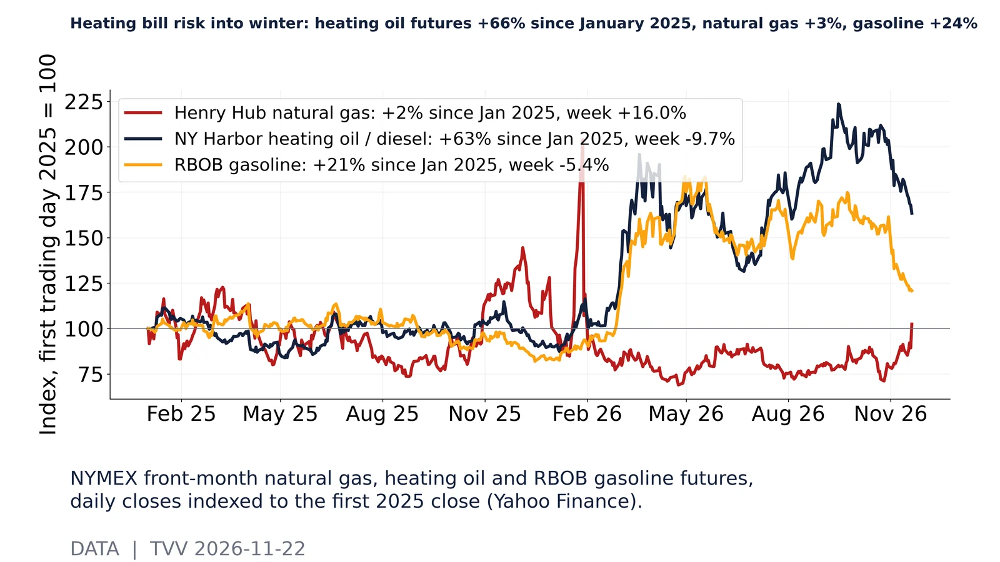
Heating bill risk into winter: heating oil futures +66% since January 2025, natural gas +3%, gasoline +24%. NYMEX front-month natural gas, heating oil and RBOB gasoline futures, daily closes indexed to the first 2025 close (Yahoo Finance). Source: https://finance.yahoo.com/quote/HO=F/
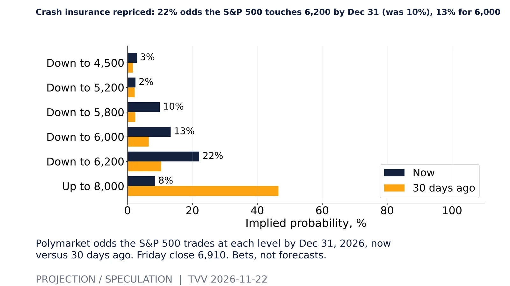
Crash insurance repriced: 22% odds the S&P 500 touches 6,200 by Dec 31 (was 10%), 13% for 6,000. Polymarket odds the S&P 500 trades at each level by Dec 31, 2026, now versus 30 days ago. Friday close 6,910. Bets, not forecasts. Source: https://polymarket.com/event/spx-hit-dec-2026
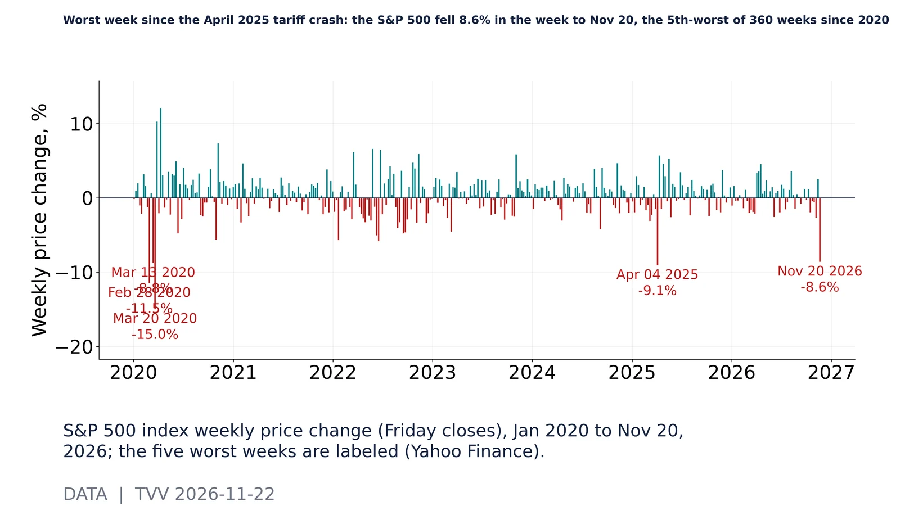
Worst week since the April 2025 tariff crash: the S&P 500 fell 8.6% in the week to Nov 20, the 5th-worst of 360 weeks since 2020. S&P 500 index weekly price change (Friday closes), Jan 2020 to Nov 20, 2026; the five worst weeks are labeled (Yahoo Finance). Source: https://finance.yahoo.com/quote/%5EGSPC/
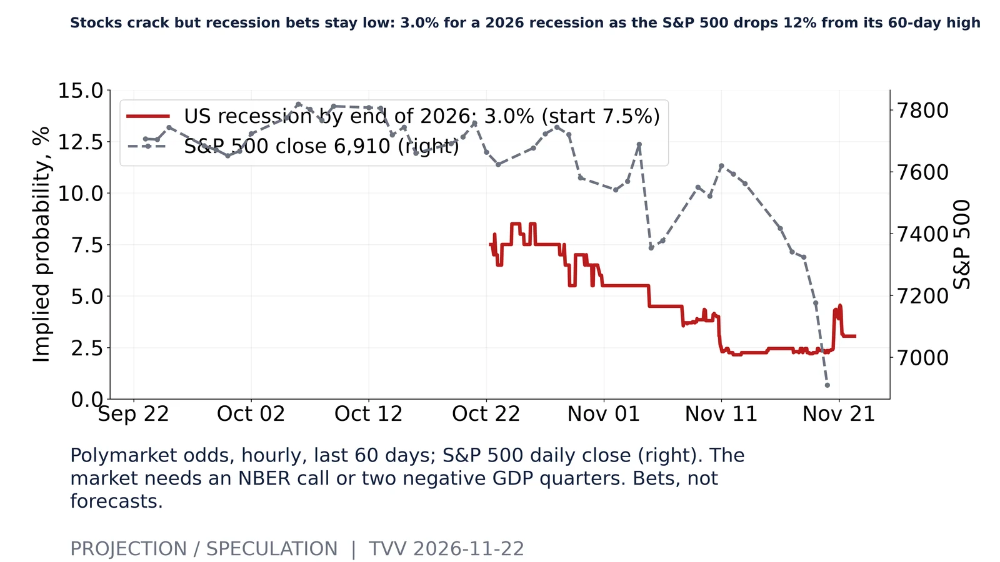
Stocks crack but recession bets stay low: 3.0% for a 2026 recession as the S&P 500 drops 12% from its 60-day high. Polymarket odds, hourly, last 60 days; S&P 500 daily close (right). The market needs an NBER call or two negative GDP quarters. Bets, not forecasts. Source: https://polymarket.com/event/us-recession-by-end-of-2026
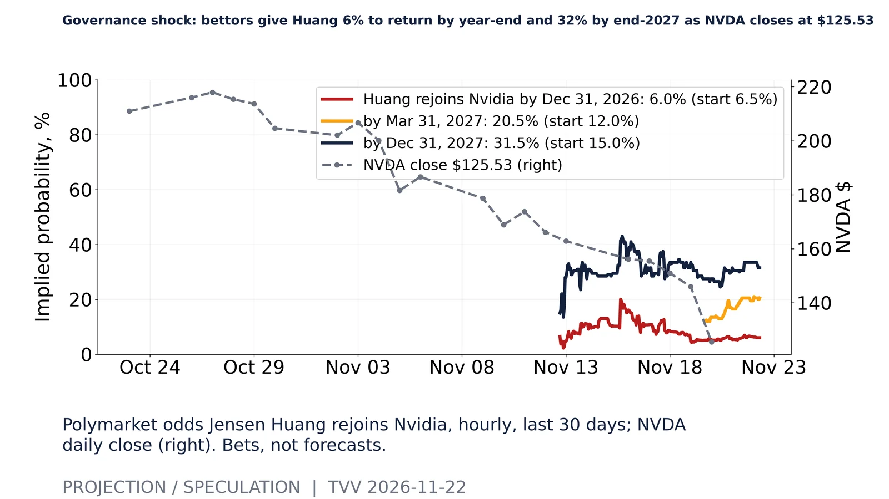
Governance shock: bettors give Huang 6% to return by year-end and 32% by end-2027 as NVDA closes at $125.53. Polymarket odds Jensen Huang rejoins Nvidia, hourly, last 30 days; NVDA daily close (right). Bets, not forecasts. Source: https://polymarket.com/event/jensen-huang-rejoins-nvidia-byptptpt
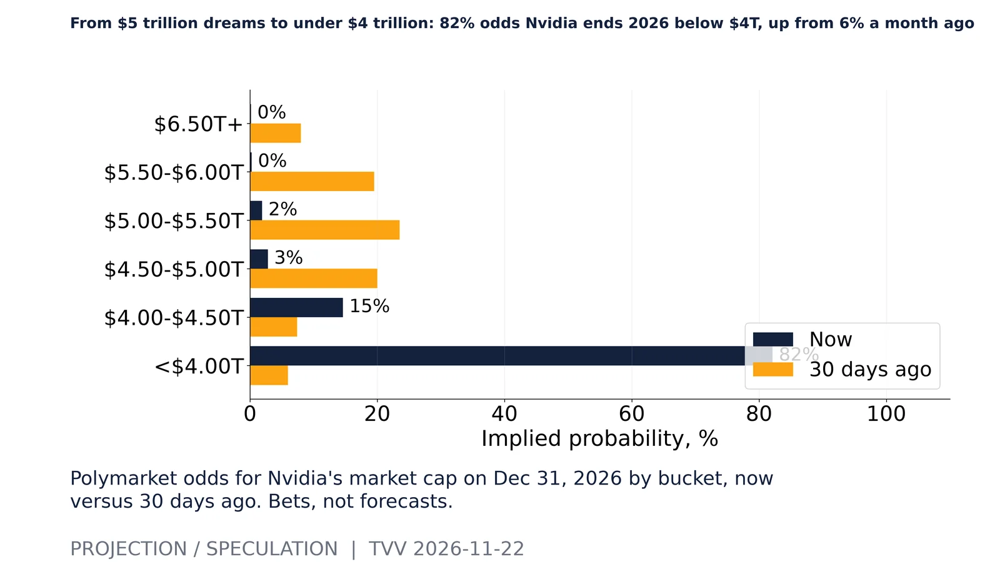
From $5 trillion dreams to under $4 trillion: 82% odds Nvidia ends 2026 below $4T, up from 6% a month ago. Polymarket odds for Nvidia's market cap on Dec 31, 2026 by bucket, now versus 30 days ago. Bets, not forecasts. Source: https://polymarket.com/event/nvidias-market-cap-end-of-2026
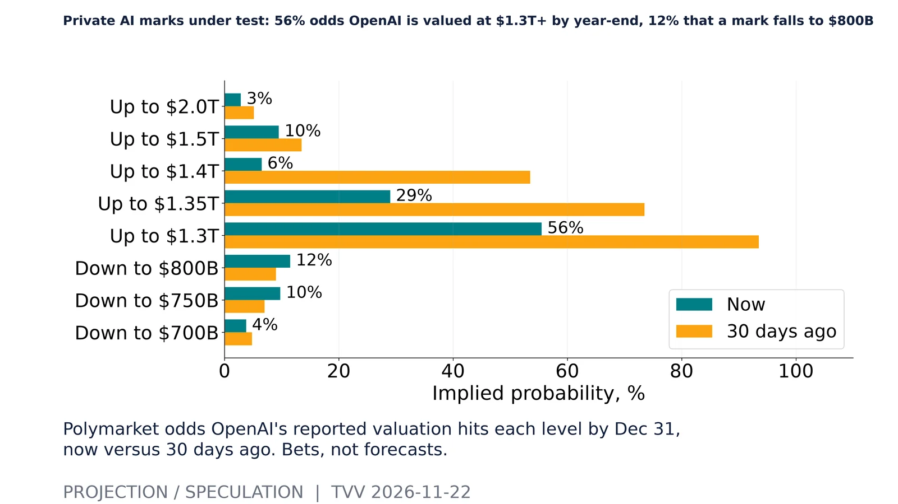
Private AI marks under test: 56% odds OpenAI is valued at $1.3T+ by year-end, 12% that a mark falls to $800B. Polymarket odds OpenAI's reported valuation hits each level by Dec 31, now versus 30 days ago. Bets, not forecasts. Source: https://polymarket.com/event/will-openais-valuation-hit-by-december-31
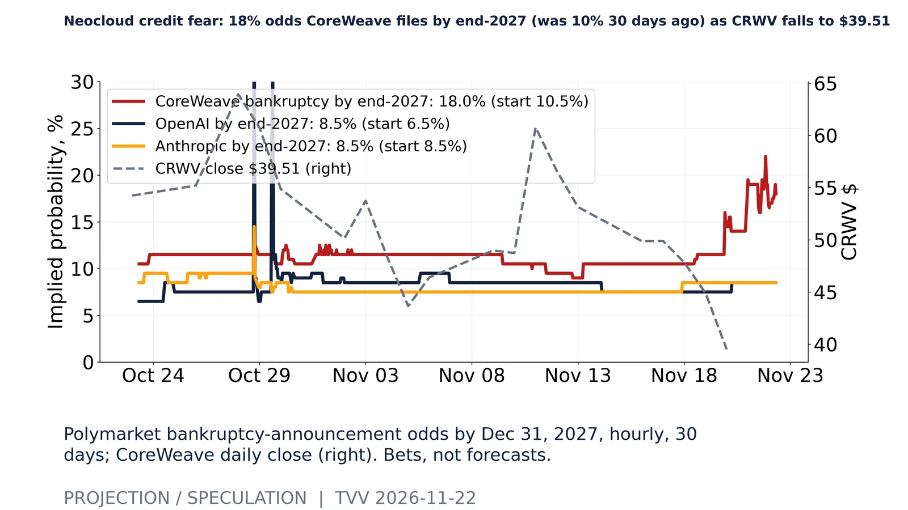
Neocloud credit fear: 18% odds CoreWeave files by end-2027 (was 10% 30 days ago) as CRWV falls to $39.51. Polymarket bankruptcy-announcement odds by Dec 31, 2027, hourly, 30 days; CoreWeave daily close (right). Bets, not forecasts. Source: https://polymarket.com/event/coreweave-announces-bankruptcy-by
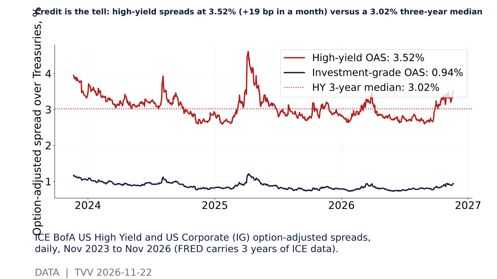
Credit is the tell: high-yield spreads at 3.52% (+19 bp in a month) versus a 3.02% three-year median. ICE BofA US High Yield and US Corporate (IG) option-adjusted spreads, daily, Nov 2023 to Nov 2026 (FRED carries 3 years of ICE data). Source: https://fred.stlouisfed.org/series/BAMLH0A0HYM2